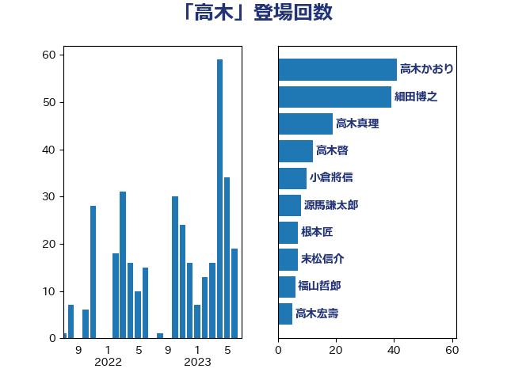

単語「高木」

| 高木かおり | 日本維新の会 | 49 回 |
| 細田博之 | 自由民主党 | 21 回 |
| 高木啓 | 自由民主党 | 13 回 |
| 山本順三 | 自由民主党 | 7 回 |
| 田村憲久 | 自由民主党 | 7 回 |
| 高木毅 | 自由民主党 | 7 回 |
| 中島克仁 | 立憲民主党 | 6 回 |
| 山東昭子 | 自由民主党 | 6 回 |
| 木原誠二 | 自由民主党 | 6 回 |
| 森屋宏 | 自由民主党 | 6 回 |
| 岡本あき子 | 立憲民主党 | 5 回 |
| 金子恭之 | 自由民主党 | 5 回 |
| 丹羽秀樹 | 自由民主党 | 4 回 |
| 山本博司 | 公明党 | 4 回 |
| 根本匠 | 自由民主党 | 4 回 |
| 海江田万里 | 立憲民主党 | 4 回 |
| 野村哲郎 | 自由民主党 | 4 回 |
| 上野賢一郎 | 自由民主党 | 3 回 |
| 山口俊一 | 自由民主党 | 3 回 |
| 平井卓也 | 自由民主党 | 3 回 |
| 橋本岳 | 自由民主党 | 3 回 |
| 浜地雅一 | 公明党 | 3 回 |
| 矢倉克夫 | 公明党 | 3 回 |
| あかま二郎 | 自由民主党 | 2 回 |
| 中谷真一 | 自由民主党 | 2 回 |
| 丸川珠代 | 自由民主党 | 2 回 |
| 古川俊治 | 自由民主党 | 2 回 |
| 古賀篤 | 自由民主党 | 2 回 |
| 堀井巌 | 自由民主党 | 2 回 |
| 小林鷹之 | 自由民主党 | 2 回 |
| 小西洋之 | 立憲民主党 | 2 回 |
| 岡本三成 | 公明党 | 2 回 |
| 平木大作 | 公明党 | 2 回 |
| 末松信介 | 自由民主党 | 2 回 |
| 村井英樹 | 自由民主党 | 2 回 |
| 柴田巧 | 日本維新の会 | 2 回 |
| 浅田均 | 日本維新の会 | 2 回 |
| 田村智子 | 日本共産党 | 2 回 |
| 菅義偉 | 自由民主党 | 2 回 |
| 西村康稔 | 自由民主党 | 2 回 |
| 足立康史 | 日本維新の会 | 2 回 |
| 麻生太郎 | 自由民主党 | 2 回 |
| こやり隆史 | 自由民主党 | 1 回 |
| 三原じゅん子 | 自由民主党 | 1 回 |
| 上杉謙太郎 | 自由民主党 | 1 回 |
| 中西祐介 | 自由民主党 | 1 回 |
| 中谷一馬 | 立憲民主党 | 1 回 |
| 伊佐進一 | 公明党 | 1 回 |
| 吉田久美子 | 公明党 | 1 回 |
| 和田義明 | 自由民主党 | 1 回 |
| 坂本哲志 | 自由民主党 | 1 回 |
| 城内実 | 自由民主党 | 1 回 |
| 宮本徹 | 日本共産党 | 1 回 |
| 小熊慎司 | 立憲民主党 | 1 回 |
| 尾辻秀久 | 無所属 | 1 回 |
| 山崎誠 | 立憲民主党 | 1 回 |
| 後藤祐一 | 立憲民主党 | 1 回 |
| 御法川信英 | 自由民主党 | 1 回 |
| 本田顕子 | 自由民主党 | 1 回 |
| 杉田水脈 | 自由民主党 | 1 回 |
| 梅村聡 | 日本維新の会 | 1 回 |
| 横山信一 | 公明党 | 1 回 |
| 櫻井周 | 立憲民主党 | 1 回 |
| 津島淳 | 自由民主党 | 1 回 |
| 紙智子 | 日本共産党 | 1 回 |
| 赤池誠章 | 自由民主党 | 1 回 |
| 赤羽一嘉 | 公明党 | 1 回 |
| 遠藤敬 | 日本維新の会 | 1 回 |
| 野田聖子 | 自由民主党 | 1 回 |
| 長島昭久 | 自由民主党 | 1 回 |
| 阿部知子 | 立憲民主党 | 1 回 |
| 馬場伸幸 | 日本維新の会 | 1 回 |
| 高木宏壽 | 自由民主党 | 1 回 |